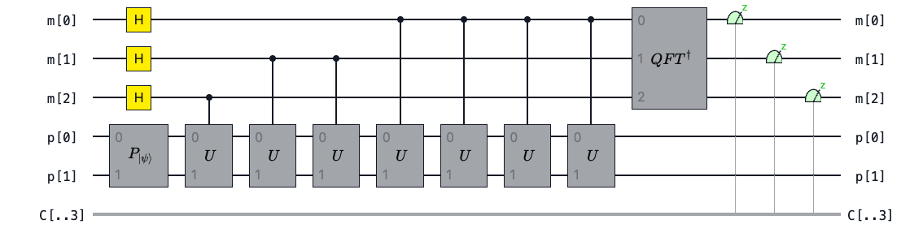
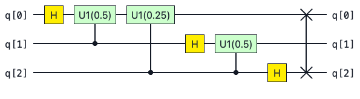

Quantum Phase Estimation¶
Download this notebook - phase_estimation.ipynb
When constructing circuits for quantum algorithms it is useful to think of higher level operations than just individual quantum gates. In pytket we can construct circuits using box structures which abstract away the complexity of the underlying circuit. This notebook is intended to complement the boxes section of the user manual which introduces the different box types.
To demonstrate boxes in pytket we will consider the Quantum Phase Estimation algorithm (QPE). This is an important subroutine in several quantum algorithms including Shor’s algorithm and fault-tolerant approaches to quantum chemistry.
Overview of Phase Estimation¶
The Quantum Phase Estimation algorithm can be used to estimate the eigenvalues of some unitary operator \(U\) to some desired precision.
The eigenvalues of \(U\) lie on the unit circle, giving us the following eigenvalue equation
Here \(|\psi \rangle\) is an eigenstate of the operator \(U\). In phase estimation we estimate the eigenvalue \(e^{2 \pi i \theta}\) by approximating \(\theta\).
The circuit for Quantum phase estimation is itself composed of several subroutines which we can realise as circuit boxes.

QPE is generally split up into three stages
Firstly we prepare an initial state \(|\psi\rangle\) in one register. In parallel we prepare a uniform superposition state using Hadamard gates on some ancilla (measurement) qubits. The number of ancilla qubits determines how precisely we can estimate the phase \(\theta\).
Secondly we apply successive controlled \(U\) gates. This has the effect of “kicking back” phases onto the ancilla qubits according to the eigenvalue equation above.
Finally we apply the inverse Quantum Fourier Transform (\(QFT^\dagger\)). This essentially plays the role of destructive interference, suppressing amplitudes from “undesirable states” and hopefully allowing us to measure a single outcome (or a small number of outcomes) with high probability.
There is some subtlety around the first point. The initial state used can be an exact eigenstate of \(U\) however this may be difficult to prepare if we don’t know the eigenvalues of \(U\) in advance. Alternatively we could use an initial state that is a linear combination of eigenstates, as the phase estimation will project into the eigenspace of \(U\).
We also assume that we can implement \(U\) with a quantum circuit. In chemistry applications \(U\) could be of the form \(U=e^{-iHt}\) where \(H\) is the Hamiltonian of some system of interest. In the textbook algorithm, the number of controlled unitaries we apply scales exponentially with the number of measurement qubits. This allows more precision at the expense of a larger quantum circuit.
The Quantum Fourier Transform¶
Before considering the other parts of the QPE algorithm, lets focus on the Quantum Fourier Transform (QFT) subroutine.
Mathematically, the QFT has the following action.
This is essentially the Discrete Fourier transform except the input is a quantum state \(|j\rangle\).
We can build the circuit for the \(n\) qubit QFT using \(n\) Hadamard gates \(\lfloor{\frac{n}{2}}\rfloor\) swap gates and \(\frac{n(n-1)}{2}\) controlled unitary rotations \(\text{CU1}\).
The circuit for the Quantum Fourier transform on three qubits is the following

We can build this circuit in pytket by adding gate operations manually:
lets build the QFT for three qubits
from pytket.circuit import Circuit
from pytket.circuit.display import render_circuit_jupyter as draw
qft3_circ = Circuit(3)
qft3_circ.H(0)
qft3_circ.CU1(0.5, 1, 0)
qft3_circ.CU1(0.25, 2, 0)
qft3_circ.H(1)
qft3_circ.CU1(0.5, 2, 1)
qft3_circ.H(2)
qft3_circ.SWAP(0, 2)
draw(qft3_circ)
We can generalise the quantum Fourier transform to \(n\) qubits by iterating over the qubits as follows
def build_qft_circuit(n_qubits: int) -> Circuit:
circ = Circuit(n_qubits, name="$$QFT$$")
for i in range(n_qubits):
circ.H(i)
for j in range(i + 1, n_qubits):
circ.CU1(1 / 2 ** (j - i), j, i)
for k in range(0, n_qubits // 2):
circ.SWAP(k, n_qubits - k - 1)
return circ
qft4_circ: Circuit = build_qft_circuit(4)
draw(qft4_circ)
Now that we have the generalised circuit we can wrap it up in a CircBox which can then be added to another circuit as a subroutine.
from pytket.circuit import CircBox
qft4_box: CircBox = CircBox(qft4_circ)
qft_circ = Circuit(4).add_gate(qft4_box, [0, 1, 2, 3])
draw(qft_circ)
Note how the CircBox inherits the name QFT from the underlying circuit.
Recall that in our phase estimation algorithm we need to use the inverse QFT.
Now that we have the QFT circuit we can obtain the inverse by using CircBox.dagger. We can also verify that this is correct by inspecting the circuit inside with CircBox.get_circuit().
inv_qft4_box = qft4_box.dagger
# Explicitly set the name of the `CircBox` to $$QFT^\dagger$$
inv_qft4_box.circuit_name = "$$QFT^\dagger$$"
qft_inv_circ = Circuit(4)
qft_inv_circ.add_gate(inv_qft4_box, [0, 1, 2, 3])
draw(qft_inv_circ)
Building the Phase Estimation Circuit¶
We can now define a function to build our entire QPE circuit. We can make this function take a state preparation circuit and a unitary circuit as input as well. The function also has the number of measurement qubits as input which will determine the precision of our phase estimate.
from pytket.circuit import QControlBox, DiagonalBox
def build_phase_estimation_circuit(
n_measurement_qubits: int, state_prep: CircBox, unitary: CircBox | DiagonalBox
) -> Circuit:
# Define a Circuit with a measurement and prep register
qpe_circ: Circuit = Circuit()
n_state_prep_qubits = state_prep.n_qubits
measurement_register = qpe_circ.add_q_register("m", n_measurement_qubits)
state_prep_register = qpe_circ.add_q_register("p", n_state_prep_qubits)
qpe_circ.add_gate(state_prep, list(state_prep_register))
# If we have unitary as a CircBox, change name to U.
# Not used in this example, just here for generality.
if isinstance(unitary, CircBox):
unitary.circuit_name = "$$U$$"
# Create a controlled unitary with a single control qubit
controlled_u_gate = QControlBox(unitary, 1)
# Add Hadamard gates to every qubit in the measurement register
for m_qubit in measurement_register:
qpe_circ.H(m_qubit)
# Add all (2**n_measurement_qubits - 1) of the controlled unitaries sequentially
for m_qubit in range(n_measurement_qubits):
control_index = n_measurement_qubits - m_qubit - 1
control_qubit = [measurement_register[control_index]]
for _ in range(2**m_qubit):
qpe_circ.add_gate(
controlled_u_gate, control_qubit + list(state_prep_register)
)
# Finally, append the inverse qft and measure the qubits
qft_box = CircBox(build_qft_circuit(n_measurement_qubits))
inverse_qft_box = qft_box.dagger
inverse_qft_box.circuit_name = "$$QFT^{\dagger}$$"
qpe_circ.add_gate(inverse_qft_box, list(measurement_register))
qpe_circ.measure_register(measurement_register, "c")
return qpe_circ
Phase Estimation with a Trivial Eigenstate¶
Lets test our circuit construction by preparing a trivial \(|11\rangle\) eigenstate of the diagonal \(U\) gate.
We can easily prepare this \(|11\rangle\) eigenstate with two Pauli \(X\) gates.
prep_circuit = Circuit(2).X(0).X(1) # prepare the |11> eigenstate of D
prep_circuit.name = "$$P_{|\psi\\rangle}$$"
prep_box = CircBox(prep_circuit)
Finally we can use the DiagonalBox to realise a circuit implementation of our operator \(U\)
from pytket.circuit import DiagonalBox
import numpy as np
u_diagonal = np.array([1, 1, np.e**(1j * np.pi/4), np.e**(1j * np.pi/8)])
d_box = DiagonalBox(u_diagonal)
Now that we have all of the pieces together we can build a phase estimation circuit to estimate the eigenvalues of \(U\) with four measurement qubits to estimate the phase.
qpe_circ_trivial = build_phase_estimation_circuit(
n_measurement_qubits=4,
state_prep=prep_box,
unitary=d_box)
draw(qpe_circ_trivial)
Try clicking on the boxes in the rendered display above to see the circuits which define the \(P_{|\psi \rangle}\) and \(QFT^\dagger\) subroutines.
Lets use the noiseless AerBackend simulator from pytket-qiskit to run our phase estimation circuit.
from pytket.extensions.qiskit import AerBackend
backend = AerBackend()
Before we can execute the QPE circuit on the Aer simulator we need to decompose the DiagonalBox, CircBox and QControlBoxprimitives.
from pytket.passes import DecomposeBoxes
DecomposeBoxes().apply(qpe_circ_trivial)
True
n_shots = 1000
result = backend.run_circuit(qpe_circ_trivial, n_shots)
plotting function for QPE Notebook
from pytket.backends.backendresult import BackendResult
import matplotlib.pyplot as plt
def plot_qpe_results(
sim_result: BackendResult,
n_strings: int = 4,
dark_mode: bool = False,
y_limit: int = 1000,
) -> None:
"""
Plots results in a barchart given a BackendResult. the number of stings displayed
can be specified with the n_strings argument.
"""
counts_dict = sim_result.get_counts()
sorted_shots = counts_dict.most_common()
n_most_common_strings = sorted_shots[:n_strings]
x_axis_values = [str(entry[0]) for entry in n_most_common_strings] # basis states
y_axis_values = [entry[1] for entry in n_most_common_strings] # counts
if dark_mode:
plt.style.use("dark_background")
fig = plt.figure()
ax = fig.add_axes((0, 0, 0.4, 0.5))
color_list = ["orange"] * (len(x_axis_values))
ax.bar(
x=x_axis_values,
height=y_axis_values,
color=color_list,
)
ax.set_title(label="Results")
plt.ylim([0, y_limit])
plt.xlabel("Basis State")
plt.ylabel("Number of Shots")
plt.show()
plot_qpe_results(result, y_limit=int(1.2 * n_shots))
We see that our measurements always give the computational basis state \(|0001\rangle\). This is the integer \(j=1\) encoded in 4 bits. From this we can easily calculate the phase estimate which in this highly idealised case will be exact.
Where \(m\) is the number of measurement qubits. In this case \(m=4\).
from pytket.backends.backendresult import BackendResult
def single_phase_from_backendresult(result: BackendResult) -> float:
# Extract most common measurement outcome
basis_state = result.get_counts().most_common()[0][0]
bitstring = "".join([str(bit) for bit in basis_state])
integer_j = int(bitstring, 2)
# Calculate theta estimate
return integer_j / (2 ** len(bitstring))
theta = single_phase_from_backendresult(result)
print(theta)
0.0625
Our output is exactly \(\theta = \frac{1}{2^4} = \frac{1}{16}=0.0625\) as we would expect from looking at our matrix \(U\).
Phase Estimation with Time Evolution¶
In the phase estimation algorithm we repeatedly perform controlled unitary operations. In the textbook variant of QPE presented here, the number of controlled unitaries will be \(2^m - 1\) where \(m\) is the number of measurement qubits.
In the example above we’ve shown a trivial instance of QPE where we know the exact phase in advance. For more realistic applications of QPE we will have some non-trivial state preparation required.
For chemistry or condensed matter physics \(U\) typically be the time evolution operator \(U(t) = e^{- i H t}\) where \(H\) is the problem Hamiltonian. Suppose that we had the following decomposition for \(H\) in terms of Pauli strings \(P_j\) and complex coefficients \(\alpha_j\).
Here the term Pauli strings refers to tensor products of Pauli operators. These strings form an orthonormal basis for \(2^n \times 2^n\) matrices.
If we have a Hamiltonian in the form above, we can then implement \(U(t)\) as a sequence of Pauli gadget circuits. We can do this with the PauliExpBox construct in pytket. For more on PauliExpBox see the user manual.
Once we have a circuit to implement our time evolution operator \(U(t)\), we can construct the controlled \(U(t)\) operations using QControlBox. If our base unitary is a sequence of PauliExpBox(es) then there is some structure we can exploit to simplify our circuit. See this blog post on ConjugationBox for more.
As an exercise, try to use phase estimation to calculate the ground state of diatomic hydrogen \(H_2\).
Suggestions for further reading¶
Quantinuum paper on Bayesian phase estimation -> https://arxiv.org/pdf/2306.16608.pdf